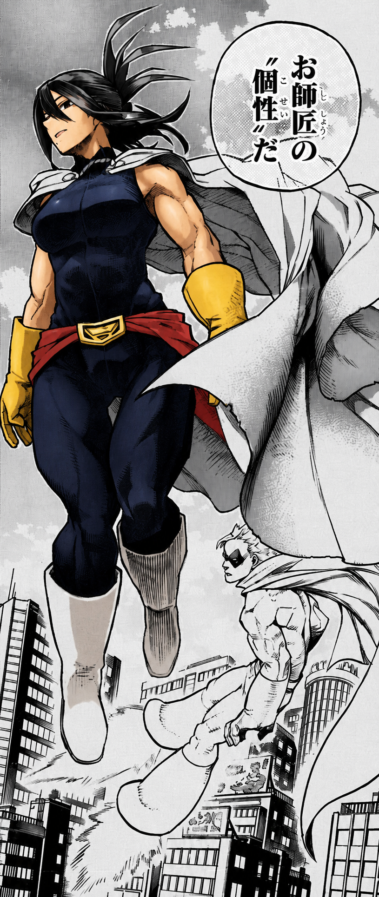
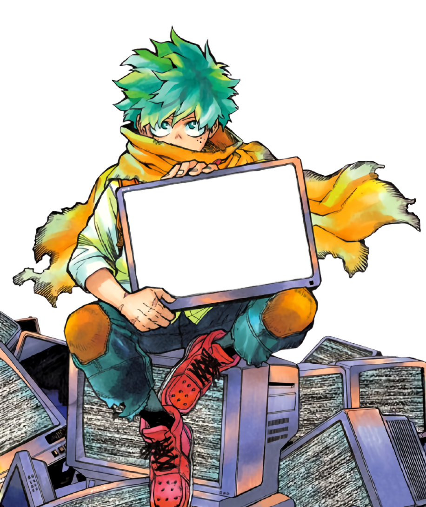

Full Stack Web Developer
Meus ProjetosSobre mim:
Sou um técnico de informática e um desenvolvedor fullstacker python formado pelo Senac. Tenho experiência em manutenção de computadores e tenho habilidades front-end e back-end, graças a esses conhecimentos consegui me aprofundar na framework Django e no uso de APIs, hospedagem, integração de SQL e integração cloud. Frequentemente utilizo o Github então também tenho experiência em ambos o git e Github. Já no front-end utilizo ferramentas como Bootstrap assim posso facilitar a experiência mobile.
Já fiz alguns projetos fora no aspecto web, como uma ferramenta de automação de produção de vídeos. Porém tenho muito mais experiência no desenvolvimento web como e-commerces e simuladores. Essas oportunidades aperfeiçoaram meu trabalho em equipe.
Meu objetivo é continuar buscando conhecimento na área da tecnologia, quero aprender novas linguagens e me especializar o máximo que eu puder a cada dia que passa.
Estou aberto a qualquer diálogo sobre novas oportunidades nessa área. Caso você esteja interessado pode olhar meus projetos e mais informações no meu portfólio ou Github.
Meus Projetos:
Carregando projetos...
Minhas Individualides:


Django
Quirk: Django, framework web.
É o django que dá vida a um site usando python para back-end, integrando todas as funcionalidades que você precisa. Com ele é possível fazer diversos projetos robustos com segurança de usuários e versátilidade.
Python
Quirk: Python, linguagem de programação versátil.
A linguagem versátil capaz de fazer aplicações completas, no meu caso eu utilizo principalmente durante o desenvolvimento usando Django. Pretendo fazer alguns projetos diferentes, assim como a automação de videos que já fiz uma vez.

HTML
Quirk: HTML, linguagem de Marcação de Hipertexto
Ele não é uma linguagem de programação, mas sim uma linguagem de marcação que organiza e estrutura o conteúdo de um site, como textos, imagens e links, para que o navegador consiga exibi-los corretamente.
CSS
Quirk: CSS, Folhas de Estilo em Cascata
Responsável pelo controle visual, criação de efeitos. Também não é uma linguagem de programação, porém ainda é uma ferramenta front-end.

Bootstrap
Quirk: Bootstrap, framework front-end
A ferramenta front-end ágil que estica, amarra e prende todos os elementos do layout de forma maleável ajudando o desenvolvimento mobile first, tornando suas paginas responsivas com pouco esforço.

Desenvolvimento Web Framework Back-end
Django
É o django que dá vida a um site usando python para back-end, integrando todas as funcionalidades que você precisa. Com ele é possível fazer diversos projetos robustos com segurança de usuários e versátilidade.
FORMAÇÃO ACADÊMICA
Curso FullStack Senac
CURSO TÉCNICOAbilidades Adquiridas:
Formação completa em desenvolvimento web full stack com Python, abrangendo back-end, front-end, boas práticas de código e desenvolvimento de aplicações web modernas.
Projeto final (Clique para acessar o repositório): CoolKeys